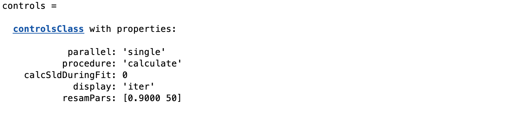
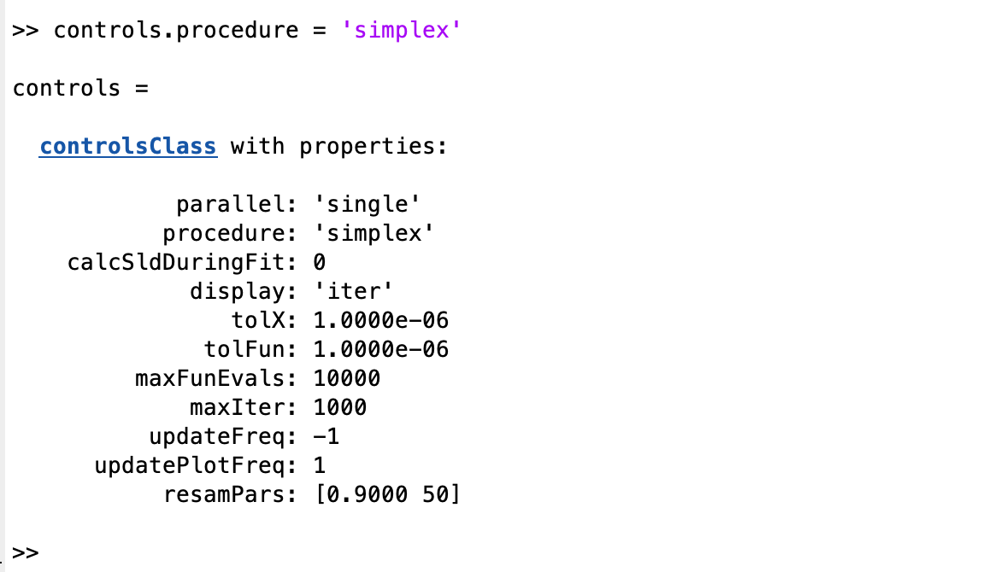

A Closer Look at the Controls Class¶
We have already seen in previous sections that once the problem has been defined in the projectClass, it is necessary to define a controls class which, as it’s name suggests, tells RAT what we want to do with the project.
Making an instance of the controls class is quite simple:-
controls = controlsClass()
This then creates an instance of controlsClass with a number of options defined:
{kind=link}
We will look at each of thesee in more detail below. Note that the options that are visible depend on the algorithm selected. So, at the moment the controls are set to ‘calculate’, which will simply calculate the reflectivity and SLD with any associated problem. If we select ‘simplex’ as the algorithm, a different set of options appears:-
{kind=link}
…which allow the user to set things such as tolerance targets and so on. There is a different set of options for each algorithm. We will no look at each of the available options in turn.
Class Methods for the controlsClass¶
Parallel¶
TODO
Procedure¶
TODO
calcSldDuringFit¶
TODO
display¶
TODO
resamPars¶
TODO